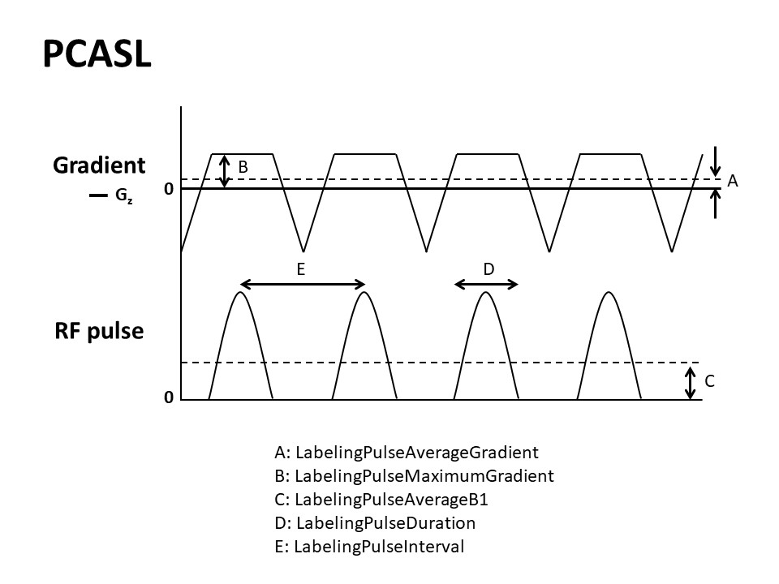

Appendix XI: Arterial Spin Labeling
Contents
Appendix XI: Arterial Spin Labeling¶
These sections provide additional clarification for some specific topics within the BIDS specification for Arterial Spin Labeling.
Which image is control and which is label?¶
The control and label images are acquired with identical acquisition parameters,
except that the blood magnetization flowing into the imaging region is effectively inverted
in the label image compared to the control image.
In case of doubt, an easy rule of thumb is that the deltaM=control-label subtraction
should result in a perfusion-weighted image with a positive sign.
For example, in the case of FAIR this would be selective inversion (control)
and non-selective inversion (label).
*_aslcontext.tsv: three possible cases¶
The *_aslcontext.tsv table consists of a single column of labels identifying the volume_type of each volume in the corresponding *_asl.nii[.gz] file.
See below examples of the three *_aslcontext.tsv cases, in order of decreasing preference.
Case 1: *_asl.nii[.gz] consists of volume_types control, label¶
In most cases, the ASL timeseries provided by the scanner consist of a series
of control and label, and optionally m0scan volumes.
In this case, only the control, label, and optionally m0scan volumes should be stored in the *_asl.nii[.gz],
and the exact volume_type series should be specified in the *_aslcontext.tsv.
Example of *_aslcontext.tsv:
volume_type
control
label
control
label
m0scan
Case 2: *_asl.nii[.gz] consists of volume_types deltam (scanner does not export control or label volumes)¶
In some cases, control and label volumes are lacking within the acquired ASL timeseries,
but the intermediate deltam - and optionally an m0scan -
volume is reconstructed/exported by the scanner.
In this case, the deltam should be included in the *_asl.nii[.gz] and specified in the *_aslcontext.tsv.
Example of *_aslcontext.tsv:
volume_type
deltam
m0scan
Case 3: *_asl.nii[.gz] consists of volume_type cbf (scanner does not export control, label, or deltaM volumes)¶
If control and label or intermediate ASL volumes are not reconstructed or exported,
but a pre-calculated cbf - and optionally a m0scan - volume is provided by the scanner,
the cbf should be included in the *_asl.nii[.gz] and specified in the *_aslcontext.tsv.
Example of *_aslcontext.tsv:
volume_type
cbf
m0scan
Summary Image of the most common ASL sequences¶
The following images illustrate the main BIDS metadata fields for three ArterialSpinLabelingType’s:
CASL, PCASL, and PASL.
Images are courtesy of, and adapted with permission from
Y. Suzuki and OSIPI Task force 4.1: ASL lexicon milestone 1.
(P)CASL sequence¶

For (P)CASL, specifying the LabelingDuration and the PostLabelingDelay is required.
The LabelingDuration is defined as the total duration of the labeling pulse train in seconds.
PostLabelingDelay is the time in seconds after the end of the labeling until the middle of the excitation pulse applied
to the imaging slab (for 3D acquisition) or first slice (for 2D acquisition).
Additionally, the BackgroundSuppressionPulseTime’s is required in case BackgroundSuppression was applied.
This an array of numbers containing the timing in seconds of the background suppression pulses
with respect to the start of the labeling.
In the case of PCASL, the recommended PCASLType field defines the type of the gradient pulses
used in the control condition (balanced or unbalanced),
whereas in case of CASL,the recommended CASLType field describes if a separate coil is used for labeling
(single-coil or double-coil).
(P)CASL Labeling Pulses¶

Several recommended metadata fields describe the labeling pulses of the labeling pulse train in PCASL.
The LabelingPulseAverageGradient and the LabelingPulseMaximumGradient are the average labeling gradient
and the maximum amplitude of the gradient switched on during the application of the labeling RF pulse(s),
in milliteslas per meter.
The LabelingPulseAverageB1 is the average B1-field strength of the RF labeling pulses in microteslas.
The LabelingPulseDuration and LabelingPulseInterval are the duration of,
and the delay between the peaks of the individual labeling pulses in milliseconds.
PASL sequence¶

For PASL, specifying the PostLabelingDelay is required.
PostLabelingDelay is the time, in seconds, from the middle of the labeling pulse until the middle of
the excitation pulse applied to the imaging slab (for 3D acquisition) or first slice (for 2D acquisition).
Additionally, the BolusCutOffFlag field is required,
which is a boolean indicating if a bolus cut-off technique has been applied.

When BolusCutOffFlag is set true for PASL, two additional metadata fields are required:
BolusCutOffTechnique and BolusCutOffDelay.
In this example, the BolusCutOffTechnique, which is the name of the technique used for applying a bolus cut-off,
is QUIPSS-II consisting of only one bolus cut-off pulse.
The BolusCutOffDelay is therefore a number, representing the duration between the end of the labeling and the start of the bolus cut-off saturation pulse, in seconds.

In this example, the BolusCutOffTechnique applied is Q2TIPS, consisting of multiple bolus cut-off pulses.
In this case, only the duration of the first and last pulse should be specified in BolusCutOffDelay.
Flowchart (based on dependency table)¶
The specification includes a dependency table, describing metadata field dependencies for ASL. This flowchart is intended to further clarify that table.